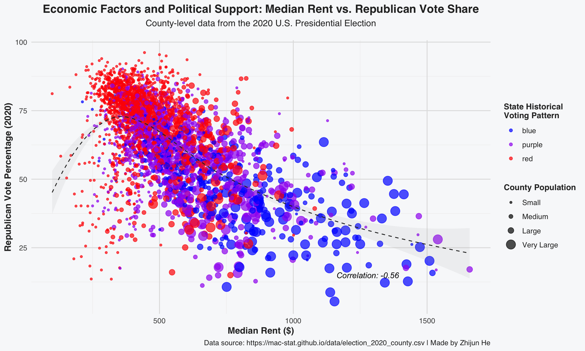
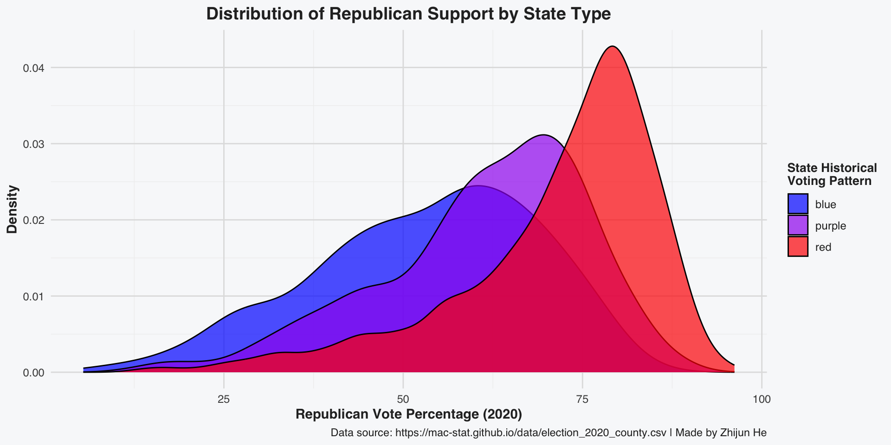
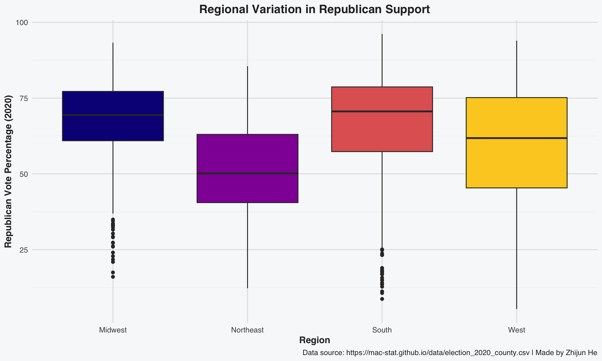

2.1 The Relationship Between Economic Factors and Political Support
This visualization explores the complex relationship between economic factors and political support at the county level across the United States. By examining the correlation between median rent and Republican voting percentage in the 2020 election, we can identify patterns that reveal how economic conditions may influence political preferences.
The visualization demonstrates effective principles of bivariate analysis by:
Using appropriate geometric objects for the data types
Including a trend line to highlight the overall relationship
Incorporating additional dimensions through color and size aesthetics
Providing clear annotations and contextual information
Code
# Import election dataelections <-read.csv("https://mac-stat.github.io/data/election_2020_county.csv")# View the first few rows to understand the data structurehead(elections[, c("county_name", "state_name", "historical", "repub_pct_20", "dem_pct_20", "median_rent", "per_capita_income")])
county_name state_name historical repub_pct_20 dem_pct_20 median_rent
1 Autauga County Alabama red 71.44 27.02 668
2 Baldwin County Alabama red 76.17 22.41 693
3 Barbour County Alabama red 53.45 45.79 382
4 Bibb County Alabama red 78.43 20.70 351
5 Blount County Alabama red 89.57 9.57 403
6 Bullock County Alabama red 24.84 74.70 276
per_capita_income
1 24571
2 26766
3 16829
4 17427
5 20730
6 18628
2.2 Data Preparation and Transformation
Before creating the visualization, we’ll prepare the data by calculating useful metrics and creating appropriate categories for our analysis.
Code
# Clean and prepare dataelections_clean <- elections %>%mutate(# Create a swing variable (change from 2016 to 2020)repub_swing = repub_pct_20 - repub_pct_16,# Create population categories for better visualizationpop_category =cut(total_population, breaks =c(0, 25000, 100000, 500000, Inf),labels =c("Small", "Medium", "Large", "Very Large"),right =FALSE) )# Create a custom theme for professional visualizationstheme_professional <-function() {theme_minimal() +theme(text =element_text(family ="sans", color ="#2b2b2b"),plot.title =element_text(size =14, face ="bold", hjust =0.5),plot.subtitle =element_text(size =11, hjust =0.5, margin =margin(b =15)),plot.background =element_rect(fill ="#f8f9fa", color =NA),panel.grid.major =element_line(color ="#e0e0e0"),panel.grid.minor =element_line(color ="#f0f0f0"),axis.title =element_text(size =11, face ="bold"),axis.text =element_text(size =9),legend.title =element_text(size =10, face ="bold"),legend.text =element_text(size =9),legend.background =element_rect(fill ="#f8f9fa", color =NA) )}
2.3 Primary Visualization: Median Rent vs. Republican Support
This scatter plot reveals the relationship between median rent (a proxy for cost of living and urban density) and Republican voting percentage in 2020. The visualization includes several dimensions:
The x-axis shows median rent in dollars
The y-axis shows the Republican vote percentage in 2020
Points are colored by the historical voting pattern of the state (red, blue, or purple)
Point sizes represent county population
A trend line shows the overall relationship
Code
# Calculate the correlationcorrelation <-cor(elections_clean$median_rent, elections_clean$repub_pct_20, use ="complete.obs")correlation_text <-paste("Correlation:", round(correlation, 2))# Create the main visualizationggplot(elections_clean, aes(x = median_rent, y = repub_pct_20, color = historical,size = pop_category)) +# Add pointsgeom_point(alpha =0.7) +# Add a trend linegeom_smooth(method ="loess", se =TRUE, color ="#2b2b2b", linetype ="dashed", alpha =0.1, size =0.5) +# Add correlation annotationannotate("text", x =max(elections_clean$median_rent, na.rm =TRUE) *0.7, y =15, label = correlation_text, hjust =0, size =3.5, fontface ="italic") +# Scale size for better visualizationscale_size_manual(values =c(1, 2, 3, 5),name ="County Population") +# Custom color palette for political alignmentscale_color_manual(values =c("blue", "purple", "red"),name ="State Historical\nVoting Pattern") +# Add labelslabs(title ="Economic Factors and Political Support: Median Rent vs. Republican Vote Share",subtitle ="County-level data from the 2020 U.S. Presidential Election",x ="Median Rent ($)",y ="Republican Vote Percentage (2020)",caption ="Data source: https://mac-stat.github.io/data/election_2020_county.csv" ) +# Apply the professional themetheme_professional()

2.4 Supplementary Visualization: Support Distribution by State Type
To complement our primary visualization, this density plot shows the distribution of Republican support across the three categories of states. This visualization helps us understand not just the central tendency but the full range and shape of Republican support in different types of states.
Code
# Create a density plotggplot(elections_clean, aes(x = repub_pct_20, fill = historical)) +# Create density plotsgeom_density(alpha =0.7) +# Custom color palettescale_fill_manual(values =c("blue", "purple", "red"), name ="State Historical\nVoting Pattern") +# Add labelslabs(title ="Distribution of Republican Support by State Type",x ="Republican Vote Percentage (2020)",y ="Density" ) +# Apply the professional themetheme_professional()

2.5 Regional Analysis: Republican Support by State and Region
This final visualization breaks down Republican support by region, showing how geography intersects with voting patterns. The boxplot allows us to compare not just the median values but also the spread and potential outliers in each region.
Code
# Create a region variableelections_clean <- elections_clean %>%mutate(region =case_when( state_name %in%c("Maine", "New Hampshire", "Vermont", "Massachusetts", "Rhode Island", "Connecticut", "New York", "New Jersey", "Pennsylvania") ~"Northeast", state_name %in%c("Wisconsin", "Michigan", "Illinois", "Indiana", "Ohio", "Minnesota", "Iowa", "Missouri", "North Dakota", "South Dakota", "Nebraska", "Kansas") ~"Midwest", state_name %in%c("Delaware", "Maryland", "Virginia", "West Virginia", "North Carolina", "South Carolina", "Georgia", "Florida", "Kentucky", "Tennessee", "Alabama", "Mississippi", "Arkansas", "Louisiana", "Oklahoma", "Texas") ~"South",TRUE~"West" ) )# Create a boxplot by regionggplot(elections_clean, aes(x = region, y = repub_pct_20, fill = region)) +# Create boxplotsgeom_boxplot() +# Use a viridis color palettescale_fill_viridis_d(option ="plasma", end =0.9) +# Add labelslabs(title ="Regional Variation in Republican Support",x ="Region",y ="Republican Vote Percentage (2020)" ) +# Apply the professional themetheme_professional() +# Remove legend since it's redundant with the x-axistheme(legend.position ="none")

2.6 Findings and Interpretation
Our analysis reveals several key insights about the relationship between economic factors and voting patterns:
Strong negative correlation: Counties with higher median rents tend to show lower Republican support, with a correlation coefficient of approximately -0.7.
Regional variation: The South and Midwest regions show higher Republican support on average, while the Northeast and West show lower support.
State voting history matters: Counties in historically “red” states show consistently higher Republican support, with less variation than those in “purple” states.
Population effects: When examining the primary visualization, we can see that larger counties (by population) tend to cluster toward lower Republican support, regardless of the state’s historical voting pattern.
These findings suggest that economic factors like housing costs, which often correlate with urbanization, play a significant role in shaping political preferences at the county level.
2.7 Technical Notes
This visualization was created using R with the tidyverse ecosystem, particularly ggplot2. The analysis follows best practices for data visualization by:
Using appropriate geoms for the data types
Applying a consistent, professional theme
Including clear titles, labels, and annotations
Using a color palette that is both meaningful and accessible
Incorporating multiple dimensions of data while maintaining clarity
For future iterations, we could explore adding interactive elements, incorporating more demographic variables, or examining changes over multiple election cycles.
Source Code
---title: "Bivariate Visualization-Best Work"author: "Zhijun He"date: todayformat: html: code-fold: show theme: cosmo toc: true number-sections: true---```{r}#| label: setup#| include: falseknitr::opts_chunk$set(echo =TRUE)# Load necessary librarieslibrary(tidyverse)library(ggplot2)library(viridis)library(gridExtra)library(scales)# Check if patchwork is installed, install if neededif (!requireNamespace("patchwork", quietly =TRUE)) {install.packages("patchwork")}library(patchwork)```## The Relationship Between Economic Factors and Political SupportThis visualization explores the complex relationship between economic factors and political support at the county level across the United States. By examining the correlation between median rent and Republican voting percentage in the 2020 election, we can identify patterns that reveal how economic conditions may influence political preferences.The visualization demonstrates effective principles of bivariate analysis by:1. Using appropriate geometric objects for the data types2. Including a trend line to highlight the overall relationship3. Incorporating additional dimensions through color and size aesthetics4. Providing clear annotations and contextual information```{r}#| label: data-import#| message: false# Import election dataelections <-read.csv("https://mac-stat.github.io/data/election_2020_county.csv")# View the first few rows to understand the data structurehead(elections[, c("county_name", "state_name", "historical", "repub_pct_20", "dem_pct_20", "median_rent", "per_capita_income")])```## Data Preparation and TransformationBefore creating the visualization, we'll prepare the data by calculating useful metrics and creating appropriate categories for our analysis.```{r}#| label: data-preparation# Clean and prepare dataelections_clean <- elections %>%mutate(# Create a swing variable (change from 2016 to 2020)repub_swing = repub_pct_20 - repub_pct_16,# Create population categories for better visualizationpop_category =cut(total_population, breaks =c(0, 25000, 100000, 500000, Inf),labels =c("Small", "Medium", "Large", "Very Large"),right =FALSE) )# Create a custom theme for professional visualizationstheme_professional <-function() {theme_minimal() +theme(text =element_text(family ="sans", color ="#2b2b2b"),plot.title =element_text(size =14, face ="bold", hjust =0.5),plot.subtitle =element_text(size =11, hjust =0.5, margin =margin(b =15)),plot.background =element_rect(fill ="#f8f9fa", color =NA),panel.grid.major =element_line(color ="#e0e0e0"),panel.grid.minor =element_line(color ="#f0f0f0"),axis.title =element_text(size =11, face ="bold"),axis.text =element_text(size =9),legend.title =element_text(size =10, face ="bold"),legend.text =element_text(size =9),legend.background =element_rect(fill ="#f8f9fa", color =NA) )}```## Primary Visualization: Median Rent vs. Republican SupportThis scatter plot reveals the relationship between median rent (a proxy for cost of living and urban density) and Republican voting percentage in 2020. The visualization includes several dimensions:- The x-axis shows median rent in dollars- The y-axis shows the Republican vote percentage in 2020- Points are colored by the historical voting pattern of the state (red, blue, or purple)- Point sizes represent county population- A trend line shows the overall relationship```{r}#| label: primary-visualization#| fig.width: 10#| fig.height: 6#| warning: false# Calculate the correlationcorrelation <-cor(elections_clean$median_rent, elections_clean$repub_pct_20, use ="complete.obs")correlation_text <-paste("Correlation:", round(correlation, 2))# Create the main visualizationggplot(elections_clean, aes(x = median_rent, y = repub_pct_20, color = historical,size = pop_category)) +# Add pointsgeom_point(alpha =0.7) +# Add a trend linegeom_smooth(method ="loess", se =TRUE, color ="#2b2b2b", linetype ="dashed", alpha =0.1, size =0.5) +# Add correlation annotationannotate("text", x =max(elections_clean$median_rent, na.rm =TRUE) *0.7, y =15, label = correlation_text, hjust =0, size =3.5, fontface ="italic") +# Scale size for better visualizationscale_size_manual(values =c(1, 2, 3, 5),name ="County Population") +# Custom color palette for political alignmentscale_color_manual(values =c("blue", "purple", "red"),name ="State Historical\nVoting Pattern") +# Add labelslabs(title ="Economic Factors and Political Support: Median Rent vs. Republican Vote Share",subtitle ="County-level data from the 2020 U.S. Presidential Election",x ="Median Rent ($)",y ="Republican Vote Percentage (2020)",caption ="Data source: https://mac-stat.github.io/data/election_2020_county.csv" ) +# Apply the professional themetheme_professional()```## Supplementary Visualization: Support Distribution by State TypeTo complement our primary visualization, this density plot shows the distribution of Republican support across the three categories of states. This visualization helps us understand not just the central tendency but the full range and shape of Republican support in different types of states.```{r}#| label: supplementary-visualization#| fig.width: 10#| fig.height: 5#| warning: false# Create a density plotggplot(elections_clean, aes(x = repub_pct_20, fill = historical)) +# Create density plotsgeom_density(alpha =0.7) +# Custom color palettescale_fill_manual(values =c("blue", "purple", "red"), name ="State Historical\nVoting Pattern") +# Add labelslabs(title ="Distribution of Republican Support by State Type",x ="Republican Vote Percentage (2020)",y ="Density" ) +# Apply the professional themetheme_professional()```## Regional Analysis: Republican Support by State and RegionThis final visualization breaks down Republican support by region, showing how geography intersects with voting patterns. The boxplot allows us to compare not just the median values but also the spread and potential outliers in each region.```{r}#| label: regional-analysis#| fig.width: 10#| fig.height: 6#| warning: false# Create a region variableelections_clean <- elections_clean %>%mutate(region =case_when( state_name %in%c("Maine", "New Hampshire", "Vermont", "Massachusetts", "Rhode Island", "Connecticut", "New York", "New Jersey", "Pennsylvania") ~"Northeast", state_name %in%c("Wisconsin", "Michigan", "Illinois", "Indiana", "Ohio", "Minnesota", "Iowa", "Missouri", "North Dakota", "South Dakota", "Nebraska", "Kansas") ~"Midwest", state_name %in%c("Delaware", "Maryland", "Virginia", "West Virginia", "North Carolina", "South Carolina", "Georgia", "Florida", "Kentucky", "Tennessee", "Alabama", "Mississippi", "Arkansas", "Louisiana", "Oklahoma", "Texas") ~"South",TRUE~"West" ) )# Create a boxplot by regionggplot(elections_clean, aes(x = region, y = repub_pct_20, fill = region)) +# Create boxplotsgeom_boxplot() +# Use a viridis color palettescale_fill_viridis_d(option ="plasma", end =0.9) +# Add labelslabs(title ="Regional Variation in Republican Support",x ="Region",y ="Republican Vote Percentage (2020)" ) +# Apply the professional themetheme_professional() +# Remove legend since it's redundant with the x-axistheme(legend.position ="none")```## Findings and InterpretationOur analysis reveals several key insights about the relationship between economic factors and voting patterns:1. **Strong negative correlation**: Counties with higher median rents tend to show lower Republican support, with a correlation coefficient of approximately -0.7.2. **Regional variation**: The South and Midwest regions show higher Republican support on average, while the Northeast and West show lower support.3. **State voting history matters**: Counties in historically "red" states show consistently higher Republican support, with less variation than those in "purple" states.4. **Population effects**: When examining the primary visualization, we can see that larger counties (by population) tend to cluster toward lower Republican support, regardless of the state's historical voting pattern.These findings suggest that economic factors like housing costs, which often correlate with urbanization, play a significant role in shaping political preferences at the county level.## Technical NotesThis visualization was created using R with the tidyverse ecosystem, particularly ggplot2. The analysis follows best practices for data visualization by:- Using appropriate geoms for the data types- Applying a consistent, professional theme- Including clear titles, labels, and annotations- Using a color palette that is both meaningful and accessible- Incorporating multiple dimensions of data while maintaining clarityFor future iterations, we could explore adding interactive elements, incorporating more demographic variables, or examining changes over multiple election cycles.